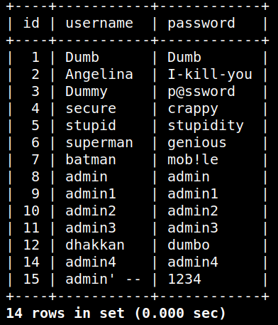
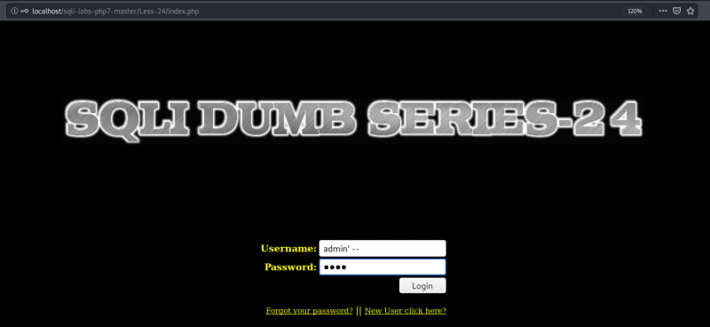
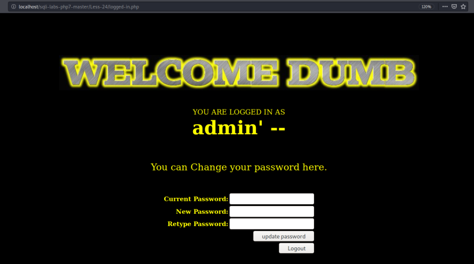
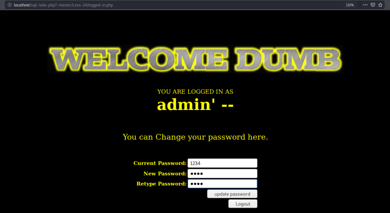

Sign in
Let's suposse we want to change the “admin” user password.
a) Creating a new user.
Click on “New User click here?” link.
b) Create a new user .
Username: “admin' --”
Password: “1234”
c) Let's check out on the shell.
select * from users;<

The user has been crerated successfully.
d) Log in as "“admin' --”.

Result: You're logged in.

e) Change the password to “asdf”.

Let's check it out on the shell.
f) You'll see on the shell that the “admin” password has changed, instead of “admin' --”.
NOTICE
Due to the fact this version of Sqli-Labs is different to “Audi-1's” and use MySqli instead of MySql this practice doesn't work properly.
“MySQLi functions as mysqli_query() allows to enforce error prone queries and prevents bugs like SQL injection”.
In the original version the code of some lines is:
$curr_pass= mysql_real_escape_string($_POST['current_password']);
$pass= mysql_real_escape_string($_POST['password']);
$re_pass= mysql_real_escape_string($_POST['re_password']);
$pass= mysql_real_escape_string($_POST['password']);
$re_pass= mysql_real_escape_string($_POST['re_password']);
In this version the code is:
$curr_pass= ($con1, $_POST['current_password']);
$pass= mysqli_real_escape_string($con1, $_POST['password']);
$re_pass= mysqli_real_escape_string($con1, $_POST['re_password']);
$pass= mysqli_real_escape_string($con1, $_POST['password']);
$re_pass= mysqli_real_escape_string($con1, $_POST['re_password']);